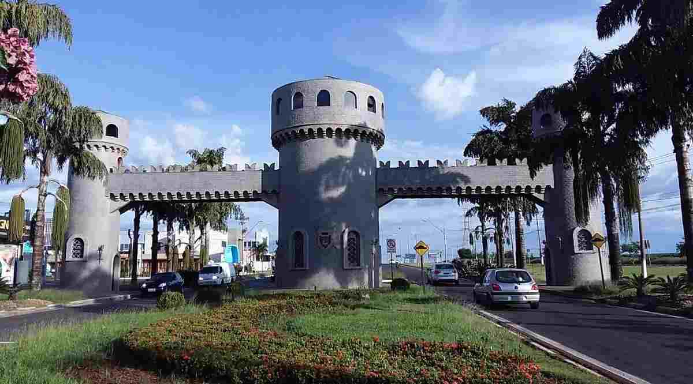

Naomi Fabiola Serrano Bravo
About Me
Hello! I am a software development student living in Paulínia, Brazil. I am passionate about building clean, responsive web applications and learning modern web technologies.
Paulínia, Brazil

Paulínia is an industrial municipality located in the state of São Paulo, Brazil. It is widely known for its petrochemical hub, cultural spaces, and vibrant technological growth. It's a wonderful place to live and pursue a career in software development.